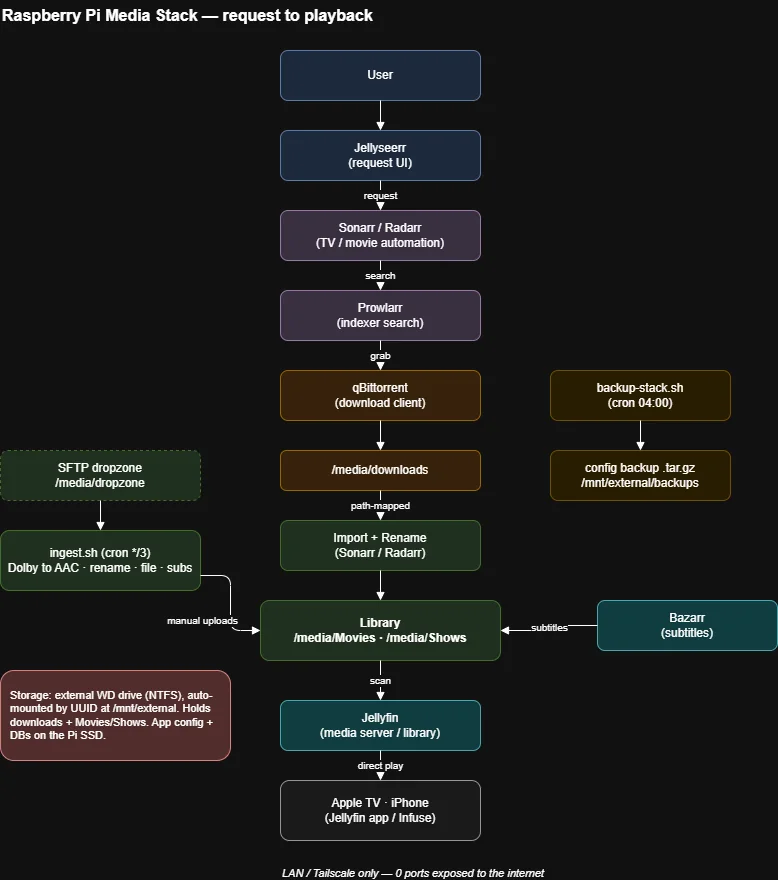

A Self-Hosted Media Server on a Raspberry Pi
The spare storage on my Pi became a Jellyfin media server, streaming to Apple TV with direct play, an automated library that organises and subtitles itself, and a custom drop-folder pipeline. The interesting part was the debugging.
My Raspberry Pi home-lab write-up ended with a to-do: "put the 400+ free gigabytes of storage to work as a proper NAS." This is that. The Pi now runs a self-hosted media server: my own library of files, streamed to the TV with artwork, resume/watched state, and subtitles, all served from a drive plugged into the Pi.
The write-up-worthy part is what broke: files that downloaded but never appeared, a whole library invisible for a one-word path typo, and playback that failed for a reason that had nothing to do with the file.
What it does
- Streams a personal library: Jellyfin indexes the media folder into a browsable library with posters and metadata, and serves it to the Jellyfin / Infuse apps on Apple TV and iPhone with resume + watched-state sync.
- Direct play, never transcode: the Pi 4 has no usable hardware transcode, so the whole thing is designed around direct play: the client decodes, the Pi just serves bytes. Confirmed via Jellyfin's session view.
- Manages its own library: an automation layer (indexer manager + download client + the *arr apps) fetches, renames, and files releases into the right folders in Jellyfin's naming convention, then Bazarr pulls matching subtitles automatically.
- Ingests manual uploads: a custom drop-folder pipeline (below) takes any file I SFTP in and normalises it into the library without me touching a thing.
How it's put together
Seven containers in the existing Compose stack, wired into one request-to-playback pipeline:

| Layer | Tool | Job |
|---|---|---|
| Serve | Jellyfin | Library, metadata, playback to clients |
| Request | Jellyseerr | Front-end that turns a request into a job |
| Automate | Sonarr / Radarr | TV + movie library management, renaming |
| Index | Prowlarr | Source management, feeds the automation apps |
| Fetch | qBittorrent | Download client |
| Subtitle | Bazarr | Automatic subtitle matching + download |
Storage is an external drive auto-mounted by UUID in fstab
(the device node isn't stable across reconnects), with the config/databases kept on the
Pi's SSD and only the large library files on the external disk. Like the rest of the box,
nothing is exposed to the internet. Access is LAN and Tailscale only.
Challenges & what I learned
Containers don't share your mental filesystem
Finished downloads never reached the library, and the log was blunt: Import failed, path does not exist or is not accessible, but it was path mapping, not permissions: the download client and the library apps mount the same disk at different in-container paths. Two containers looking at the same folder can still disagree about its name.
The custom pipeline
Not everything comes through automation; some files I add by hand. Instead of doing the
grunt work each time, a small Bash + FFmpeg pipeline (a cron job over an
SFTP drop folder) handles it: it waits for the upload to finish, converts incompatible
Dolby audio to AAC (copying the video, so it takes seconds not hours), parses the title
and year (or season/episode) from the filename, files it into the library under Jellyfin's
naming scheme, moves any matching subtitle sidecar, and triggers a rescan. Anything it
can't confidently parse is quarantined for me to rename rather than mis-filed silently.
A companion job tars the stack's config nightly: consistent SQLite snapshots, no downtime,
so the whole thing is reproducible from a Git repo plus one archive.